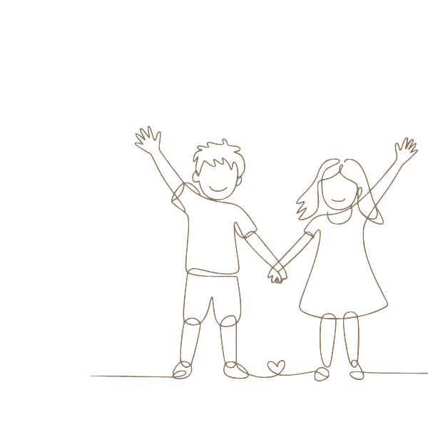

Precise Sitter
お子様一人ひとりの暮らしに、寄り添う関わりを。
発達特性（ASD・ADHD・グレーゾーン等）のある2〜6歳のお子様とそのご家庭を対象とした、家庭支援型シッターサービスです。
For Whom
Specifications
Our Approach
外部支援施設での取り組みを、ご家庭で継続する。

外部支援施設（療育施設・発達支援施設・通級指導教室など）での取り組みを保護者様から伺い、同じ視点・同じ関わり方をご家庭で再現します。
施設・シッター・保護者が同じ方向を向いて関わり続けることで、お子様の安心感が日常の中に根づいていきます。
発達特性のあるお子様にとって、一貫した関わりの継続が安心の土台になると考えています。
※ 医療行為・療育行為は含みません。
※ 関わりの効果はお子様によって異なります。特定の成果をお約束するものではありませんが、継続的な関わりの中で変化を一緒に見守っていきます。
Use Cases
Care Summary
訪問後24時間以内に、行動観察にもとづく報告書をお届けします。
業界標準の連絡帳ではなく、保育・発達支援の知見にもとづく内容です。